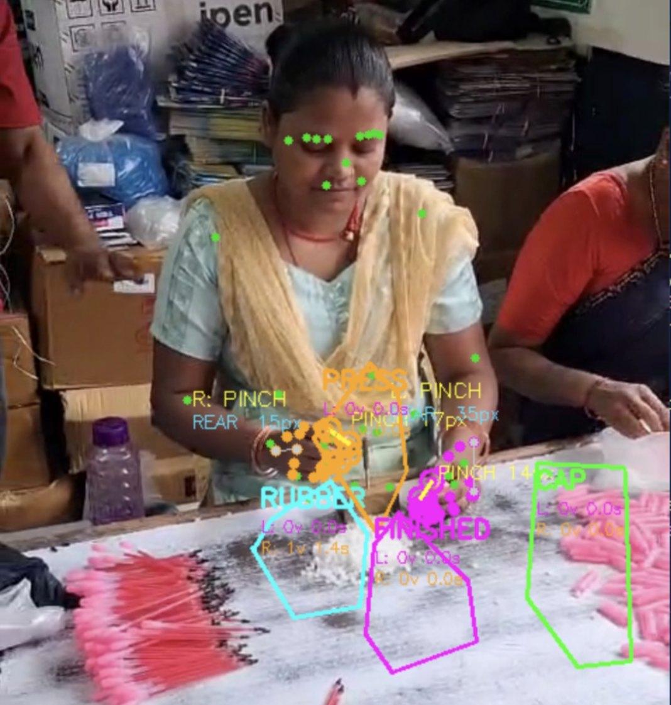
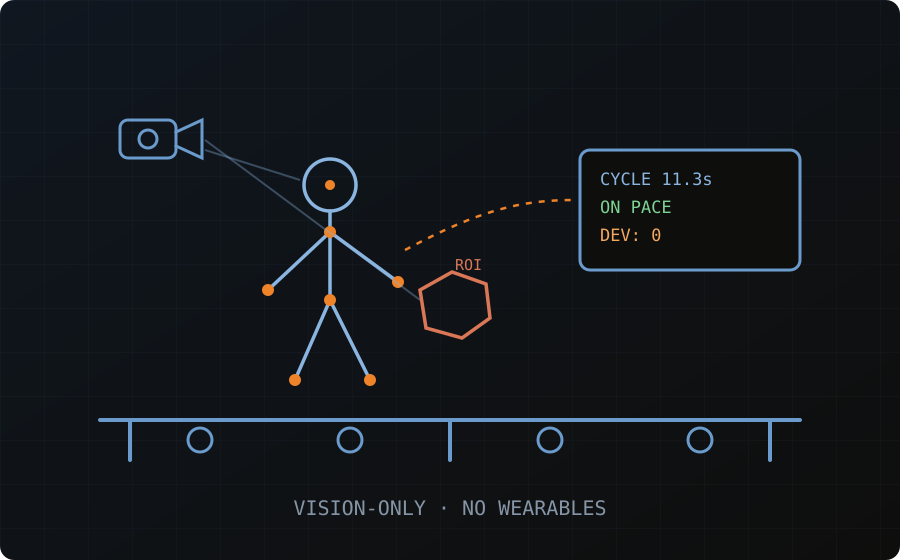

››› The Challenge
Manual time study was never built to be accurate
Work measurement today requires an Industrial Engineer to stand lineside, making and noting observations by hand. It's not just cumbersome — it's unreliable. The Hawthorne effect means worker speeds change simply because they're being watched, often producing intentionally slower work that sets artificially low benchmarks.
››› In The Field
Use cases: the tool at work
Real deployments of Kairad's computer-vision work measurement — captured on live production floors.
Vision-tracked assembly on a working pen line
On a manual gel-pen assembly line, the system tracks each operator's hands through a five-step standard work sequence — pick rubber, place on press tool, pick cap, press with thumb, move finished part — using zone detection (RUBBER, PRESS, CAP, FINISHED) and fingertip-level motion recognition, with no wearables on the operator.
Every cycle is timed against an 11.0 s benchmark built from per-step standard times. The live Andon monitor shows pace, cycles behind benchmark, and out-of-sequence work as it happens — and every deviation is logged with its exact cycle-time variance for line balancing afterwards.
Left: pinch-detection and ROI zones overlaid on the operator's workstation. Right: the Line Andon cycle monitor during the same run.

››› Real-Time Quality Assurance
Catch deviations before the cycle completes
- Catch Deviations Instantly — the system continuously monitors operator movements against the pre-determined standard work sequence.
- Automated Andon Loop — a sequence fault or pace drop triggers an instant backend alert on the line.
- Operator Acknowledgment — operators acknowledge the trigger and correct motion or sequence before the cycle completes.
- Reduce Rework — deviations are eliminated at the source, actualizing a "do it right the first time" ideology.

››› Impact
Driving process and worker efficiency
Process Work Measurement
Automates cycle-time collection down to the sub-task level, eliminating manual, isolated time studies in favor of continuous, accurate data.
Worker Efficiency & Balancing
Tracks pace against standard, exposing line-balancing issues and invisible bottlenecks such as inconsistent material feed rates.
››› The Technology
Computer vision, built on OpenCV
Our solution uses state-of-the-art computer vision to track human kinematics and component interactions directly on the floor — without requiring operators to wear any tracking device or sensor. The system parses visual data to measure cycle times, detect out-of-sequence operations, and feed live analytics to supervisors.
Non-Intrusive Monitoring
Reduces the Hawthorne effect since operators aren't wearing or facing dedicated tracking hardware.
High-Precision Zone Tracking
Region of Interest (ROI) tracking pinpoints exactly where in the workstation an action occurs.
Live Dashboard Analytics
Supervisors see cycle-time and deviation data as it happens, not after the shift ends.
- Tracks upper and lower body movement, including micro-motions
- Recognizes specific functions — gripping a tool, pinching a tube, picking a part
- Detects hand rotation (wrist–middle-finger-base angle) to count exact clockwise/anticlockwise screw rotations
››› Target Environments
Built for repetitive, standardized production
Adaptable to manual, semi-automated, or fully automated environments producing a repetitive, standardized product.
Vehicle Manufacturing
Textile Manufacturing
FMCG Production & Packaging
Silicon Chip Manufacturing & Defense Applications
››› Real-Time Analytics
Future value, built into every cycle
- Automatically generates a CSV noting every deviation from standard work and the exact cycle-time variance
- Reduces rework, automates cycle-time analysis for line balancing, and ensures real-time quality assurance
- Easy Excel extraction for visualization and workflow automation
Run a pilot at your facility
See computer-vision work measurement on your own line before committing to a full rollout.